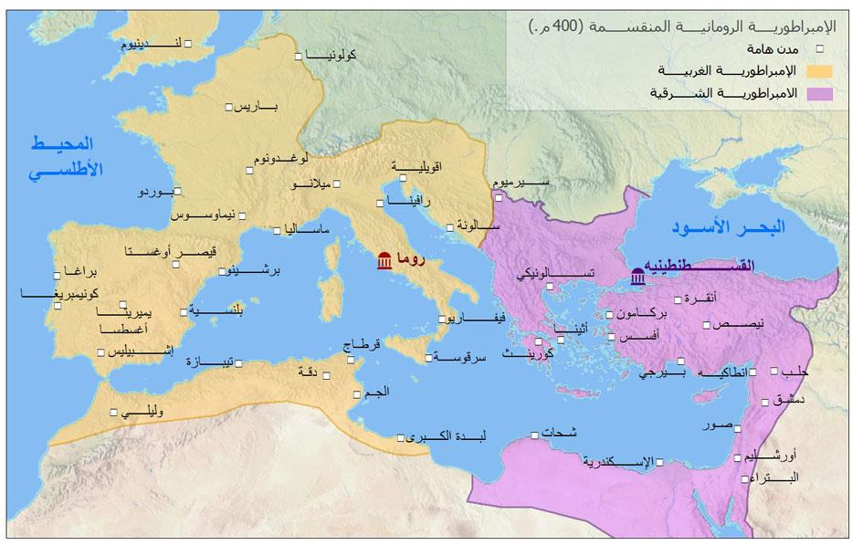
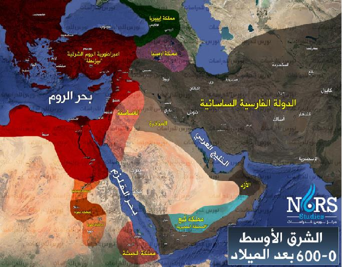
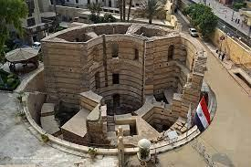

للاستزادة: شرح المرشد السياحي بالإنجليزية
🎙️
TOUR GUIDE SPOKEN SCRIPT
How to Explain Byzantine Egypt to Tourists in English
▼
How to Explain Byzantine Egypt to Tourists in English
"Ladies and gentlemen, to truly understand the Islamic opening of Egypt in 641 AD, we must step back into the dark final chapters of Byzantine rule. For over three centuries, Egypt was regarded not as an autonomous nation, but strictly as the 'Granary of the Byzantine Empire' (or the imperial breadbasket), stripped of its abundant wheat harvest to feed Constantinople."
"The native Egyptians—the Copts—suffered dual oppression: devastating fiscal extortion under corrupt tax farmers, and ruthless religious persecution following the Council of Chalcedon in 451 AD. While the Byzantine crown enforced the Melkite (Dyophysite) doctrine, Egyptian Christians adamantly preserved their Monophysite (Miaphysite) faith under the Coptic Patriarch Benjamin I, who spent over a decade hiding in desert caves. When Arab troops under General Amr ibn al-Aas arrived at the colossal gates of Babylon Fortress, Egyptian society was not losing freedom; they were finally escaping Byzantine tyranny."
📖
قاموس ومصطلحات المحاضرة للمرشد (اضغط هنا لفتح / طي القاموس)
TOUR GUIDE BILINGUAL GLOSSARY
▼
قاموس ومصطلحات المحاضرة للمرشد (اضغط هنا لفتح / طي القاموس)
TOUR GUIDE BILINGUAL GLOSSARY💡 تنبيه للمرشد السياحي: هذه المصطلحات والكلمات مستخرجة من المنهج الأكاديمي المعتمد، ومزودة بالنطق الصوتي والمعنى السياقي للمرشد:
سلة خبز الإمبراطورية
الشحنة السعيدة
Granary of Empire
/ˈɡrænəri əv ði ˈɛmpaɪər/
▼
سلة خبز الإمبراطورية
المعنى السياقي: الوصف الاقتصادي لمصر خلال العصرين الروماني والبيزنطي، حيث كانت تصدّر سنوياً ملايين الأرداب من القمح لإطعام سكان القسطنطينية وروما مجاناً.
نظام الحماية
إقطاع بيزنطي
Patronage System
/ˈpeɪtrənɪdʒ ˈsɪstəm/
▼
نظام الحماية
المعنى السياقي: النظام الذي لجأ إليه الفلاحون المصريون للتنازل عن أراضيهم للأمراء والأشراف لحمايتهم من بطش جباة الضرائب البيزنطيين، فتحولوا من مالكين إلى أقنان.
أقنان الأرض
عبودية الأرض
Serfs / Coloni
/sɜːrfs / kəˈloʊnaɪ/
▼
أقنان الأرض
المعنى السياقي: المزارعون المقيدون بالأرض إقطاعياً؛ لا يملكون بيعها أو مغادرتها، ويُباعون مع الأرض، وهي الحالة المزرية التي هبط إليها معظم الفلاحين المصريين.
المسؤولية الجماعية
جباية قسرية
Collective Liability
/kəˈlɛktɪv ˌlaɪəˈbɪləti/
▼
المسؤولية الجماعية
المعنى السياقي: نظام جباية بيزنطي متعسف يُلزم أهل القرية مجتمعين بدفع ضرائب أي فلاح هارب أو متوفٍ، وفلاحة أرضه بالقوة لمنع نقص الإيراد الإمبراطوري.
حرب الزراع (البوكولية)
ثورة الدلتا (172م)
Bucolic War
/bjuːˈkɒlɪk wɔːr/
▼
حرب الزراع (البوكولية)
المعنى السياقي: ثورة شعبية مسلحة كبرى قادها الرعاة والفلاحون المصريون في مستنقعات الدلتا ضد عسف الرومان في عهد ماركوس أوريليوس، وهددت الإسكندرية قبل قمعها.
الدوق (حاكم الإقليم)
رتبة بيزنطية
Dux / Dukes
/djuːks / djuːk/
▼
الدوق (حاكم الإقليم)
المعنى السياقي: رتبة عسكرية وسياسية بيزنطية تُطلق على الحاكم الإقليمي لأحد أقاليم مصر الخمسة، وكان يجمع في يده كافة السلطات العسكرية والمدنية والقضائية والشرطية.
حصن بابليون
مصر القديمة
Babylon Fortress
/ˈbæbɪlən ˈfɔːrtrɪs/
▼
حصن بابليون
المعنى السياقي: الحصن العسكري الروماني العظيم في مصر القديمة؛ شيده تراجان عند رأس الدلتا ليشرف على تلاقي الوجهين البحري والقبلي ويحمي البوابة الشرقية والنيل.
تقويم الشهداء
التقويم القبطي (284م)
Era of Martyrs
/ˈɪərə əv ˈmɑːrtərz/
▼
تقويم الشهداء
المعنى السياقي: بداية التقويم القبطي المعتمد حتى اليوم، اختارته الكنيسة القبطية تخليداً لأرواح آلاف الشهداء الذين أعدمهم الإمبراطور دقلديانوس في ذروة الاضطهاد.
مجمع خلقدونية
الانشقاق الكنسي (451م)
Council of Chalcedon
/ˈkaʊnsəl əv kælˈsiːdən/
▼
مجمع خلقدونية
المعنى السياقي: المجمع الكنسي الرابع الذي تسبب في الانشقاق الأعظم؛ أقر مذهب الطبيعتين للمسيح، ونفى بابا الإسكندرية ديسقورس، مما فجّر صراعاً وطنياً بين المصريين وبيزنطة.
المذهب المونوفيزيتي
عقيدة الأقباط
Monophysitism
/məˈnɒfɪsaɪˌtɪzəm/
▼
المذهب المونوفيزيتي
المعنى السياقي: العقيدة اللاهوتية القبطية الأرثوذكسية التي تؤمن بـ «طبيعة واحدة متجسدة لله الكلمة» (لاهوت وناسوت متحدان بغير اختلاط ولا امتزاج ولا تغيير).
الملكانيون
مذهب الإمبراطور
Melkites (Royalists)
/ˈmɛlkaɪts/
▼
الملكانيون
المعنى السياقي: لقب أطلقه أقباط مصر على أتباع كنيسة القسطنطينية ومذهب الإمبراطور (الملك) البيزنطي، الذين تمسكوا بمذهب الطبيعتين المنفصلتين للسيد المسيح.
المقوقس (قيرس)
الحاكم البيزنطي
Al-Muqawqis
/ˈsaɪrəs/
▼
المقوقس (قيرس)
المعنى السياقي: بطريرك الملكانيين المعين من هرقل عام 631م وحاكم مصر المدني والديني، مارس إرهاباً دموياً ضد الأقباط لأكثر من 10 سنوات لإجبارهم على مذهب الدولة.
مفهوم مصطلح «الحضارة» وعناصرها الأربعة
تعريف مصطلح «الحضارة» في المنهج الأكاديمي المعتمد:
الحضارة: هي إنجازات الإنسان عبر الزمن، سواء كانت إنجازات مادية (كالعمارة، والسدود، والمنشآت، والمخترعات) أو فكرية (كالفلسفة، والآداب، والعلوم، والشرائع)، وتتحدد دائماً بالمكان الجغرافي الذي احتواها وتفاعل معها الإنسان.
عناصر الحضارة الأربعة الأساسية:
وجود سلطة حاكمة وقوانين تنظم علاقات الأفراد، وتحفظ الأمن الداخلي والخارجي وتدير مرافق الدولة.
وفرة مصادر الإنتاج كالزراعة الخصبة، والمياه، والتجارة، والمناجم التي توفر فائضاً للمعيشة والبناء.
المنظومة الأخلاقية والدينية والأعراف الاجتماعية التي تحكم ضمير المجتمع وتمنحه تماسكه الروحي.
الابتكار المعماري، والرسم، والطب، والفلك، والتدوين، وكل ما يرتقي بالوجدان والإنتاج المعرفي للأمة.
الدولة البيزنطية ومسمياتها التاريخية الثلاثة
عُرفت هذه الإمبراطورية بثلاثة مسميات رئيسية في المصادر الكلاسيكية والعربية والتاريخية، ولها دلالات سياسية وجغرافية هامة يجب على المرشد توضيحها للسياح:
الدولة الرومانية الشرقية
أحد المسميات الرسمية التي عُرفت بها الدولة؛ إذ أنها الامتداد الشرقي للإمبراطورية الرومانية بعد انقسامها عام 395م بين ولدي ثيودوسيوس: أركاديوس (الشرق) وهونوريوس (الغرب).
دولة الروم (المصادر العربية)
الاسم الذي أطلقه العرب والمسلمون عليها في مصادرهم التاريخية وكتاباتهم، وهو الاسم المذكور في القرآن الكريم في مطلع سورة الروم: ﴿غُلِبَتِ الرُّومُ فِي أَدْنَى الْأَرْضِ﴾.
الدولة البيزنطية (Byzantine)
أُطلق هذا الاسم نسبة إلى موقع عاصمتها القديم الذي كان قرية إغريقية تُعرف بـ «بيزنطة» (Byzantium)، والتي أسس فيها الإمبراطور قسطنطين الأكبر عاصمته الجديدة عام 330م وسماها «القسطنطينية» نسبة إليه.

خريطة الإمبراطورية الرومانية المنقسمة (400 م): الإمبراطورية الشرقية (بيزنطة بالوردي) والإمبراطورية الغربية (بالأصفر).

خريطة الشرق الأوسط (0-600 م): حدود إمبراطورية الروم الشرقية في مواجهة الدولة الفارسية الساسانية وبحر القلزم.
أولاً: الأحوال الاقتصادية فى مصر أثناء العصر البيزنطى
١. مكانة مصر: «سلة الخبز»
كانت مصر تُعد «سلة الخبز» ومخزناً ضخماً للغلال والمؤن للدولة البيزنطية، وخاصة محصول القمح. وكانت شحنات القمح السنوية المعروفة بـ (Embole) تُنقل إجبارياً من ميناء الإسكندرية لتأمين إطعام بلاط وجيوش القسطنطينية دون مقابل حقيقي للمصريين.
٢. الأعباء وظهور «نظام الحماية»
فرضت بيزنطة ضرائب باهظة وخانقة على كواهل الفلاحين، بينما أُعفي منها كبار الملاك البيزنطيون. أدى تعسف الجباية إلى تذمر الفلاحين ولجوئهم للأمراء الإقطاعيين لحمايتهم في ما عُرف بـ نظام الحماية (Patronage). وبمرور الوقت، فقد الفلاحون ملكية أراضيهم وتحولوا إلى (أرقاء) أقنان (Serfs) مقيدين بالأرض.
٣. التحول إلى النظام الإقطاعي
أصبحت مصر تخضع لنظام شبيه تماماً بـ النظام الإقطاعي الأوروبي؛ إذ وُزعت الإقطاعات الزراعية والضياع الشاسعة بين عدد محدود من الأسر الغنية القوية (مثل أسرة أبيون Apion في البهنسا)، التي امتلكت سجونا وجيوشا خاصة وجباة خاصين بها.
⚠️ ٤. التعسف الروماني ونظام جباية الضرائب:
٥. ردود فعل المصريين والتدهور الاقتصادي:
- قيام ثورات شعبية متعددة، أشهرها «حرب الزراع» أو «الحرب البوكولية» (Bucolic War) في عهد الإمبراطور ماركوس أوريليوس، وقد قمعها الرومان بالقوة والبطش.
- ترك وهجر آلاف المصريين لمتاجرهم ومزارعهم ومصانعهم هرباً من الجباة.
- ترتب على ذلك كساد التجارة، تأخر الزراعة، تراجع الصناعة، إهمال صيانة الترع وجسور الري، وفقدان الأمن وتفشي السلب.
٦. التقسيم الإداري الخماسي للبلاد:
قُسّمت مصر إلى 5 أقسام إدارية كبرى مما أضعف سلطة الدولة المركزية وفكك الترابط الاقتصادي بين الأقاليم:
ثانياً: الأحوال السياسية والعسكرية فى مصر ودراسة حصن بابليون
🏛️ ١. طبيعة الحكم البيزنطي لمصر:
- كانت مصر خاضعة مباشرة لإمبراطور القسطنطينية (خلافاً لمعظم المقاطعات التي كانت تتبع مجلس الشيوخ).
- اتسم الحكم بأنه مباشر، مستبد، وقائم على القهر العسكري ويدار بواسطة حاكم يعينه الإمبراطور.
- كان الحضور السياسي ضعيفاً، فانعدم التوازن بين الحكم المركزي والشعب المصري.
- اقتصر مظهر السيادة الوحيد على وجود مراكز عسكرية بالحاميات والمدن لتأمين جباية الضرائب.
- أدت صراعات ومؤامرات البلاط البيزنطي إلى مضايقات مستمرة واستنزاف لأموال المصريين.
⚔️ ٢. التنظيم العسكري وسلطة «الدوق»:
- أبقت بيزنطة حامية عسكرية قوامها 30 ألف جندي (ثلاث فرق Legions وقوات مساعدة) لإخضاع البلاد.
- حُكم كل إقليم من الأقاليم الخمسة بواسطة أمير يُعرف بـ «الدوق» (Dux)، وكان مستقلاً تقريباً في إقليمه.
- جمع الدوق في يديه جميع السلطات: المدنية، العسكرية، القضائية، والشرطية.
- أصبح لكل إقليم جيشه الخاص التابع للدوق، والذي ضم مصريين بعد تغير السياسة التي كانت تمنع تجنيدهم، لكنهم كانوا يفتقدون للولاء لبيزنطة.
🛡️ ٣. أداء الجيش البيزنطي وتدهور كفاءته:
قلّ الاهتمام بالتدريب العسكري والانضباط الصارم، واتخذ جنود الجيش لأنفسهم مهناً أخرى كـ الزراعة والتجارة إلى جانب مهنة الحرب، مما أفقدهم الروح القتالية. وانحصرت مهام الجيش في:
٤. حصن بابليون (Babylon Fortress) بمصر القديمة
الهدف من بنائه: شُيّد الحصن ليكون مركز الحماية العسكرية الرومانية وحصن الدفاع الأول للبوابة الشرقية لمصر. بناه الإمبراطور تراجان (Trajan) حوالي عام 98–117م، وجدده الإمبراطور أركاديوس.
عبقرية اختيار الموقع الجغرافي: اختير موقعه الاستراتيجي بعناية فائقة؛ لأنه يتوسط مصر تماماً بين الوجه البحري (الدلتا) والوجه القبلي (الصعيد)، ويتحكم في رأس خليج تراجان (القناة الواصلة بين النيل والبحر الأحمر). هذا الموقع العبقري منح الحامية الرومانية القدرة على:
- السيطرة والتحرك العسكري السريع لإخماد أي ثورة تندلع سواء في شمال البلاد أو جنوبها.
- التحكم في الملاحة النهرية وحركة التجارة وجباية المكوس بين الصعيد والدلتا.
- تأمين خط الدفاع الداخلي قبل الوصول إلى العاصمة الإسكندرية.

رابعاً: الأحوال الدينية فى مصر أثناء العصر البيزنطى
✝️ ١. انتشار المسيحية وبداية الاضطهاد الوثني:
دخلت المسيحية مصر في القرن الأول الميلادي على يد القديس مرقس الرسول وازدهرت بحلول القرن الثاني. وقد تعرض المسيحيون لاضطهاد شديد وممنهج من الأباطرة الوثنيين، وأبرزهم:
🏛️ ٢. الاعتراف بالمسيحية وتحولها لدين رسمي:
٣. الخلاف المذهبي ومجمع خلقدونية (451م)
ظهر نزاع لاهوتي عميق حول طبيعة السيد المسيح قسّم العالم المسيحي إلى معسكرين متصارعين:
مجمع خلقدونية (451م) وتحول الخلاف الديني إلى نزاع قومي وسياسي:
عقد الإمبراطور مرقيان مجمع خلقدونية (451م) الذي فرض مذهب الطبيعتين، وكفّر مذهب الطبيعة الواحدة، وتم نفي البابا ديسقورس بطريرك الإسكندرية.
📌 النتيجة: تحول الخلاف الديني في مصر إلى «نزاع قومي وسياسي» عارم؛ ورفض المصريون قرارات المجمع واعتبروا كنيسة بيزنطة استعماراً غريباً، فانفصلت كنيسة الإسكندرية الوطنية نهائياً.
الفرس واستعادة هرقل
ساند المصريون هرقل ضد فوكاس (610م). ثم غزا الفرس الساسانيون مصر (616–629م) ونعم المصريون خلال حكمهم بحرية دينية تحت قيادة البطريرك الأنبا بنيامين الأول، قبل أن يطردهم هرقل سنة 629م.
مرسوم صورة توفيق (Mono Thelma)
أصدر هرقل مرسوماً يعرف بالمونوثيليتية ينص على أن للمسيح «إرادة واحدة وفعل واحد» لتوحيد صفوف الإمبراطورية، إلا أن أقباط مصر رفضوه رفضاً قاطعاً لتمسكهم بعقيدتهم الأرثوذكسية.
حكم المقوقس (قيرس) 631م
عيّن هرقل قيرس حاكماً سياسياً وبطريركاً، فأذاق المصريين صنوف الإرهاب والتعذيب لأكثر من 10 سنوات لإجبارهم على مذهب الدولة، واضطر البطريرك بنيامين للهرب والاختفاء في الصحراء حتى دخول العرب.
🌟 النتيجة التاريخية الكبرى (خلاصة المحاضرة الأولى):
ثبت أغلب المصريين على عقيدتهم ورَفَضوا مذهب الدولة البيزنطية، وانفصمت مصر تماماً من الناحية الروحية والقومية والوجدانية عن الدولة البيزنطية، مما هيّأ أذهان المصريين لاستقبال الفتح العربي الإسلامي والتطلع إليه كمنقذ للتخلص من الظلم والاستبداد البيزنطي.
افتح تدريبات وأسئلة الدرس
بنك الأسئلة واختبار الفهم التفاعلي
اختبر استيعابك لمحاضرة العصر البيزنطي (٧ أسئلة دقيقة)
اختر الإجابة الصحيحة لتكتشف التعليل الأكاديمي والتوظيف الإرشادي فوراً.
ثالثاً: الأحوال الاجتماعية فى مصر أثناء العصر البيزنطى
معاملة الشعب كمغلوب مقهور
عاملت روما وبيزنطة شعب مصر كأنه شعب مغلوب مقهور لا حقوق له؛ مجرد أداة إنتاجية لدفع الضرائب وتوفير الغلال للبلاط الإمبراطوري.
امتيازات خاصة للأجانب
مُنح التجار اليونانيون واليهود امتيازات وحصانات مالية وتجارية وقضائية واسعة داخل مصر على حساب التجار والمواطنين المصريين أصحاب الأرض.
حظر حيازة السلاح (عقوبة الإعدام)
حُظر على المصريين قطعياً حمل السلاح أو اقتناؤه حتى لحماية أنفسهم، وكانت عقوبة حيازة أي سلاح تصل إلى الإعدام الفوري خوفاً من ثوراتهم.
مكانة الإسكندرية (مدينة أجنبية باذخة)
كانت الإسكندرية بمثابة مدينة يونانية أجنبية منفصلة عن مصر (Alexandria ad Aegyptum)، وعُرفت بالبذخ والترف الفاحش للطبقات الحاكمة، لدرجة أن توجه أي مصري من الريف إليها كان يُعد رحيلاً عن البلاد وخروجاً منها لشدة التباين الثقافي والطبقي!
تحول الفلاح إلى أجير وقن
تحولت باقي أقاليم مصر إلى ضياع إقطاعية زراعية تتقاسم السلطة والملكيات فيها أسر غنية متنفذة، بينما تحول الفلاح المصري صاحب التاريخ إلى مجرد أجير كادح محروم.